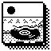

Плеер для своей музыки в стиле Макинтоша 1987 года — для Android, macOS и Windows. Слушает альбомы целиком, играет почти любые форматы, ничего не собирает и не отправляет.
Скачать — версия 0.1.1
Android 8.0 и новее, arm64. Разрешите установку из браузера или файлового менеджера. При первом запуске Arafura попросит доступ ко всем файлам — без него не видны .cue и обложки.
macOS 11 и новее, Apple Silicon. Распакуйте и перетащите Arafura в «Программы». В первый раз откройте правым щелчком → «Открыть»: Arafura пока не подписана у Apple.
Windows 10 и 11, 64-бит. Распакуйте куда угодно и запустите Arafura.exe. SmartScreen может предупредить о неизвестном издателе: «Подробнее» → «Выполнить в любом случае».
Скоро в RuStore.
© 2026 Егор Ткаченко. Сделано на Slint; редкие форматы играет FFmpeg (LGPL).